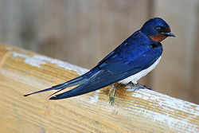
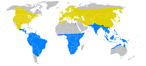

H. r. rustica in Denmark

{kind=link}
Linnaeus, 1758
{kind=link}
Breeding range
Resident year-round
Non-breeding range
- Hirundo erythrogaster
| Barn Swallow | |
|---|---|
|  | |
| European subspecies, H. r. rustica in Denmark |
|
| Conservation status | |
| Binomial name | |
| Hirundo rustica Linnaeus, 1758 |
|
|  | |
|
Breeding range
Resident year-round
Non-breeding range
|
|
| Synonyms | |
|
The Barn Swallow (Hirundo rustica) is the most widespread species of swallow in the world.[2] A distinctive passerine bird with blue upperparts, a long, deeply forked tail and curved, pointed wings, it is found in Europe, Asia, Africa and the Americas.[2] In Anglophone Europe it is just called the Swallow; in Northern Europe it is the only common species called a "swallow" rather than a "martin".[3]
There are six subspecies of Barn Swallow, which breed across the Northern Hemisphere. Four are strongly migratory, and their wintering grounds cover much of the Southern Hemisphere as far south as central Argentina, the Cape Province of South Africa, and northern Australia.[2] Its huge range means that the Barn Swallow is not endangered, although there may be local population declines due to specific threats, such as the construction of an international airport near Durban.[4]
The Barn Swallow is a bird of open country which normally uses man-made structures to breed and consequently has spread with human expansion. It builds a cup nest from mud pellets in barns or similar structures and feeds on insects caught in flight.[5] This species lives in close association with humans, and its insect-eating habits mean that it is tolerated by man; this acceptance was reinforced in the past by superstitions regarding the bird and its nest. There are frequent cultural references to the Barn Swallow in literary and religious works due to both its living in close proximity to humans and its conspicuous annual migration.[6] The Barn Swallow is the national bird of Estonia.